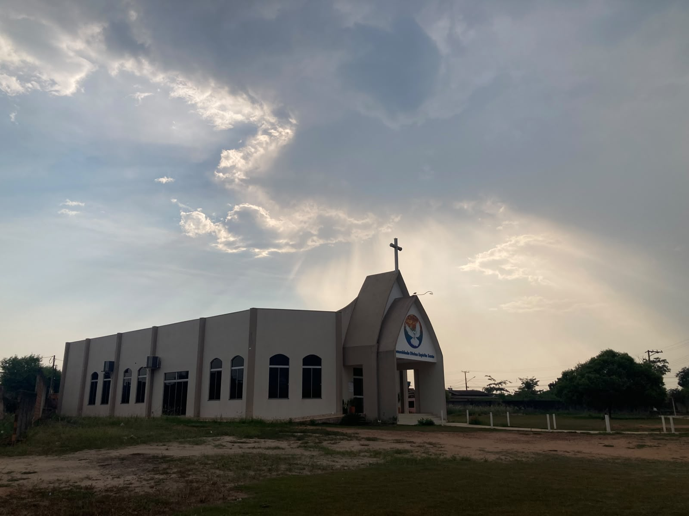
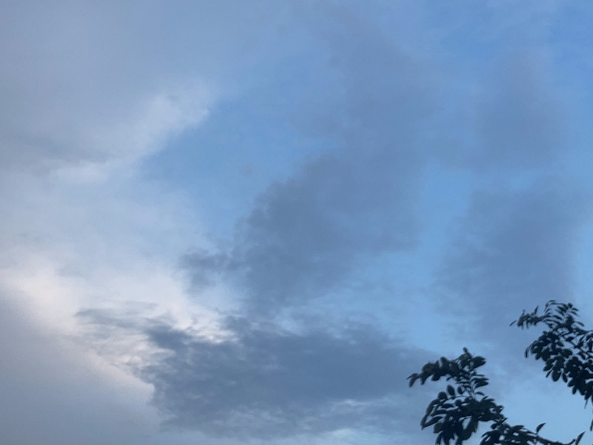

Carregando…
Observatório · Juína, Mato Grosso
Tempo, clima
e contexto.
Previsão atualizada, observações de estações do INMET, El Niño, sol e lua e ferramentas de meteorologia. Cada informação traz a fonte, a data e os limites de uso.
nascer e pôr do sol (horário de Cuiabá)
Painel nº 4 · setembro de 2026
01 · Previsão
Tempo em Juína, MT.
Consulte a previsão em municípios brasileiros.
Carregando a previsão meteorológica…
A lista de municípios brasileiros é fornecida localmente pelo próprio site. A previsão é consultada diretamente no MET Norway, que recebe as coordenadas do município escolhido e seu endereço IP. O site não acessa sua localização GPS.
Próxima condição prevista
Temperatura
Umidade relativa
Vento (de onde sopra)
Pressão ao nível do mar
Cobertura de nuvens
Ponto de orvalho
Chuva na próxima hora
FonteMET Norway
Indicadores automáticos do modelo
São leituras simples da previsão, não alertas oficiais. Para avisos de risco, consulte o INMET Alertas e a Defesa Civil.
Ver os valores em tabela
| Hora | Temperatura | Umidade | Vento | Chuva |
|---|
Próximos dias
Previsão meteorológica: MET Norway, licenciados sob CC BY 4.0. Previsão de modelo, não observação de estação nem informação para operação aeronáutica.
Localidades brasileiras: base municipios-brasileiros, fornecida localmente sob licença MIT.
Para comparação, consulte também a previsão numérica do CPTEC/INPE e as estações meteorológicas do INMET.
02 · Sol e Lua
O céu de hoje,
calculado para Juína.
Os horários são calculados no seu navegador para o ponto de referência de Juína, sem consultar serviços externos. A margem típica é de cerca de 1 a 2 minutos; para uso aeronáutico, consulte as publicações oficiais (AISWEB/DECEA).
Nascer do sol—
Meio-dia solar—
Pôr do sol—
Duração do dia—
Início do crepúsculo civil—
Fim do crepúsculo civil—
Lua
—
03 · Clima observado
Juína em 2024,
medido por estação.
Dados horários da estação automática A920 do INMET, convertidos para o horário local (UTC−4). Mostramos apenas o que passa por critérios simples de cobertura e deixamos as lacunas visíveis, em vez de preenchê-las.
Antes de ler os gráficos
Carregando…
Ver os valores em tabela
| Mês | Dados | Chuva | Dias com chuva ≥ 1 mm | Máxima média | Mínima média | UR mínima média |
|---|
O que estes dados não mostram
- Só um ano. Sem a média de muitos anos (a “normal climatológica”), não dá para dizer se 2024 foi mais seco, mais quente ou mais chuvoso que o habitual.
- Lacunas. Boa parte das falhas está entre setembro e dezembro e ocorre sobretudo à noite. Por isso não há mínimas nem chuva confiáveis em setembro, outubro e dezembro, e a chuva de julho, agosto e novembro é parcial.
- Um ponto. A estação representa o local onde está instalada; áreas rurais vizinhas podem ter chuva bem diferente.
- Dados brutos. São valores publicados pelo INMET, sem validação adicional da Briefing Técnico.
04 · Mato Grosso
Estações vizinhas,
mesmo ano.
A base de 2024 reúne estações automáticas do INMET em Mato Grosso. Para comparar chuva, usamos só as que têm a série praticamente completa.
Estações mais próximas de Juína
| Estação | Distância | Horas com dados | Chuva (dias válidos) | Máxima absoluta |
|---|
Distância em linha reta a partir da estação de Juína. “Chuva” é a soma dos dias com dados; quando os dias válidos são menos de 335, o total é parcial e não deve ser comparado com os demais.
05 · El Niño
El Niño 2026/27:
o que os boletins dizem.
Resumo do Painel El Niño, publicado mensalmente por INMET, INPE, ANA, CEMADEN, SGB, SEDEC e CENSIPAM. Última edição consultada: nº 4, setembro de 2026. Há edições mais recentes? Confira nos links abaixo.
Fenômeno em curso
Condições de El Niño confirmadas em junho de 2026, com intensidade “muito forte” provável.
- Confirmação: a NOAA declarou o El Niño em 11/06/2026, e o Painel nº 4 registra a confirmação em junho.
- Oceano: o boletim da NOAA de 28/09 mostra anomalias positivas de temperatura da superfície do mar superiores a 2 °C (Painel nº 4).
- Intensidade: probabilidade superior a 95% de um El Niño muito forte; o painel cita a possibilidade de ser o mais forte desde 1950, com anomalias que podem superar 2,5 °C (Painel nº 4).
- Duração: os modelos indicam permanência do fenômeno pelo menos até o início de 2027 (Painel nº 4).
- NOAA declara El Niño
- Painel nº 2: previsão ASO com chuva abaixo da faixa normal em grande parte do centro-norte do país
- Painel nº 3: previsão SON com chuva abaixo da faixa normal como cenário mais provável, principalmente em MT
- Painel nº 4: previsão OND com chuva abaixo da média no centro-norte de MT
O que os boletins dizem sobre Mato Grosso
Abaixo da média no centro-norte
A previsão sazonal para outubro a dezembro indica chuva abaixo da média no centro-norte de Mato Grosso, e a temperatura tende a ficar acima do normal em praticamente todo o país (Painel nº 4). O boletim de agosto já apontava, para setembro a novembro, chuva abaixo da faixa normal como cenário mais provável, principalmente em Mato Grosso (nº 3).
Sem seca predominante
O Painel nº 4 mostra predominância de áreas sem seca em Mato Grosso no Monitor de Secas. Em junho, o Painel nº 2 já destacava que o estado havia ficado livre de seca na última atualização e que a área com seca no Centro-Oeste era quase três vezes menor que em junho de 2023.
Semeadura e incêndios pedem atenção
Chuva abaixo da média em Mato Grosso pode dificultar o estabelecimento inicial das culturas de verão e agravar a deficiência hídrica e o risco de incêndios; o retorno das chuvas em novembro deve melhorar a umidade do solo (Painel nº 3). A previsão de risco de fogo do Painel nº 2 já apontava alerta alto sobre o Centro-Oeste, especialmente Mato Grosso.
Como interpretar
A previsão sazonal é probabilística e regional: indica tendências para o trimestre, não o que acontecerá em Juína em cada dia. “Centro-norte de Mato Grosso” não é o mesmo que “Juína”, que fica no noroeste do estado. Para decisões de campo, consulte a previsão do dia, o INMET e os técnicos da região.
06 · Meteorologia aeronáutica
Aprenda a ler
um METAR.
Mensagens meteorológicas aeronáuticas seguem um formato codificado e padronizado. A ferramenta abaixo traduz um METAR ou SPECI para linguagem comum, com fins educativos. Consulte também os recursos de aviação da Perfect Protection.
Observação
Relato regular das condições observadas em um aeródromo (vento, visibilidade, nuvens, temperatura e pressão).
Observação especial
Emitido quando há mudança significativa entre dois METAR.
Previsão de aeródromo
Previsão para o aeródromo e sua vizinhança, por período de validade.
Fenômenos significativos
Aviso de fenômenos que podem afetar a segurança das aeronaves em uma região de informação de voo.
Ferramenta educativa. O exemplo é ilustrativo, não é uma observação real. Não use esta página para planejamento ou operação de voo: consulte sempre as fontes oficiais, como a REDEMET e o AISWEB, ambos do DECEA. Um METAR descreve o aeródromo que o emite; não há METAR oficial para Juína neste site.
07 · Fontes e método
De onde vem
cada informação.
Última revisão do conteúdo: 9 de outubro de 2026. Dados de terceiros pertencem às instituições citadas; confira as condições de uso de cada fonte antes de reproduzi-los.
| Informação | Fonte | Período | Tratamento |
|---|---|---|---|
| Previsão | MET Norway (CC BY 4.0) | Atual, consulta no navegador | Dias agrupados no horário de Cuiabá; ponto de orvalho calculado pela fórmula de Magnus; indicadores automáticos simples. |
| Sol e Lua | Cálculo local: equações do NOAA (Sol) e séries de Meeus (Lua) | Qualquer data | Sem serviço externo. Margem típica de 1 a 2 minutos. |
| Clima observado | INMET, estações automáticas (dados horários) | Jan–dez 2024 | Horário UTC convertido para UTC−4. Dia “válido” só com horas suficientes na janela relevante: máxima e umidade mínima (11h–16h), mínima (3h–7h), chuva (22 h ou mais). Sem preenchimento de lacunas. |
| El Niño | Painel El Niño 2026–2027 (INMET, INPE, ANA, CEMADEN, SGB, SEDEC, CENSIPAM) | Edições nº 2 a 4 (jul–set/2026) | Resumo com indicação da edição de cada afirmação. |
| METAR | Norma de formato METAR (ICAO/OACI, adotada pelo DECEA) | — | Decodificação no navegador; não consulta nenhum serviço. |
Glossário rápido
- Umidade relativa (UR)
- Quanto vapor há no ar em relação ao máximo possível naquela temperatura. Abaixo de 30%, órgãos de saúde e de defesa civil costumam recomendar atenção.
- Ponto de orvalho
- Temperatura em que o ar fica saturado e o vapor começa a condensar. Quanto mais perto da temperatura do ar, mais úmido e “abafado”.
- QNH
- Pressão ajustada ao nível médio do mar, usada pela aviação para acertar o altímetro (em hPa, no Brasil).
- ENOS / El Niño
- Oscilação Sul: aquecimento anormal do Pacífico equatorial central e leste, que altera a circulação atmosférica e muda a chuva e a temperatura em várias regiões.
- Normal climatológica
- Média de variáveis do clima em um período longo (em geral 30 anos). Serve de referência para dizer se um ano foi diferente do habitual.
Sobre este Observatório
É um projeto de informação da Briefing Técnico. Não emite previsão própria, laudo, alerta nem informação para operação aeronáutica. O estudo de um boletim local, com medições próprias e validação, continua descrito na página inicial.
Fotografias de campo · Juína, MT
Fotografias
de Juína e região.
Registros fotográficos compartilhados de Juína, incluindo o céu iluminado sobre a igreja. As imagens retratam instantes específicos e não substituem observações meteorológicas instrumentais.

Juína, MT · 13 out. 2026 · 16h05 local (UTC−4)
Juína, MT · 03 out. 2026 · 17h42 local (UTC−4)

Juína, MT · 03 out. 2026 · 17h44 local (UTC−4)
Juína, MT · 03 out. 2026 · 17h44 local (UTC−4)
Juína, MT · 03 out. 2026 · 17h45 local (UTC−4)
Juína, MT · 03 out. 2026 · 17h45 local (UTC−4)
Todos os horários foram convertidos do horário local de Juína (UTC−4) para UTC. Os registros 01–05 conservam abaixo a hora local original para consulta; o registro 06 foi capturado às 16h05 locais em 13/10/2026. Os valores UTC estão nos metadados datetime e são exibidos em cada registro. Para proteger endereços e privacidade, a galeria mostra apenas o município, não os pontos exatos indicados nos arquivos originais. Novos registros enviados por WhatsApp serão avaliados antes de uma eventual publicação; o site não recebe nem publica imagens automaticamente.